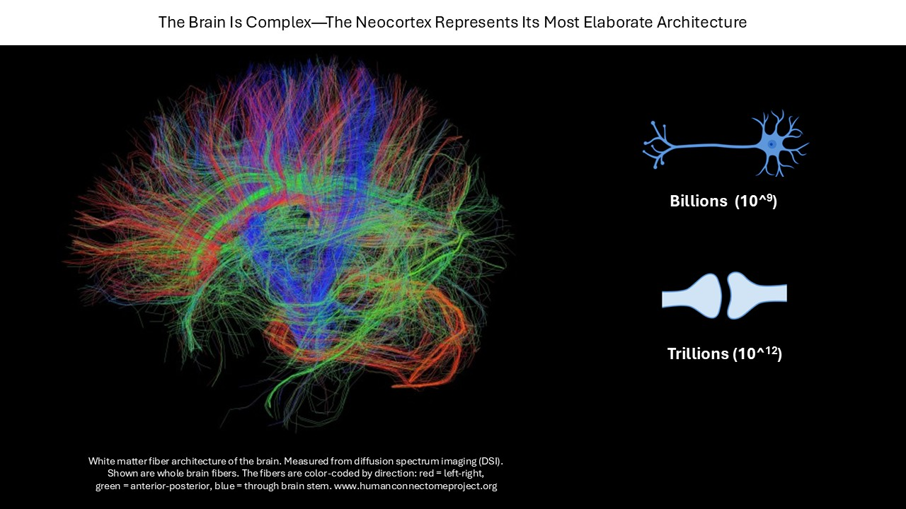
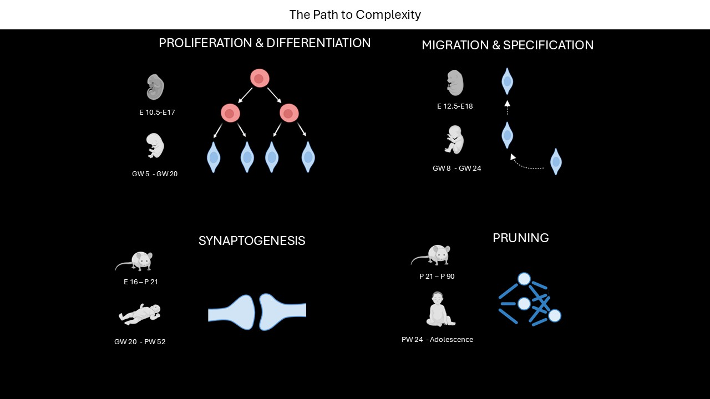
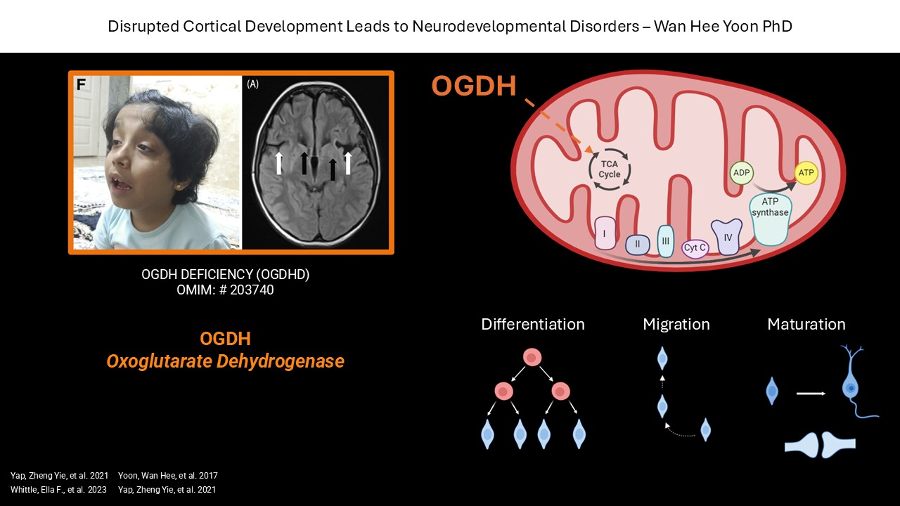
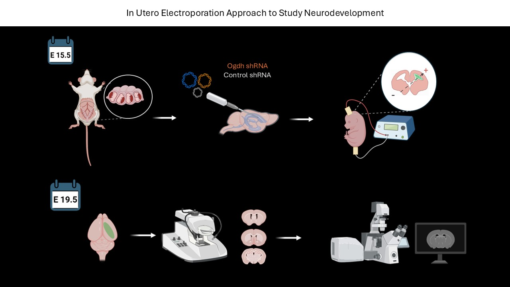
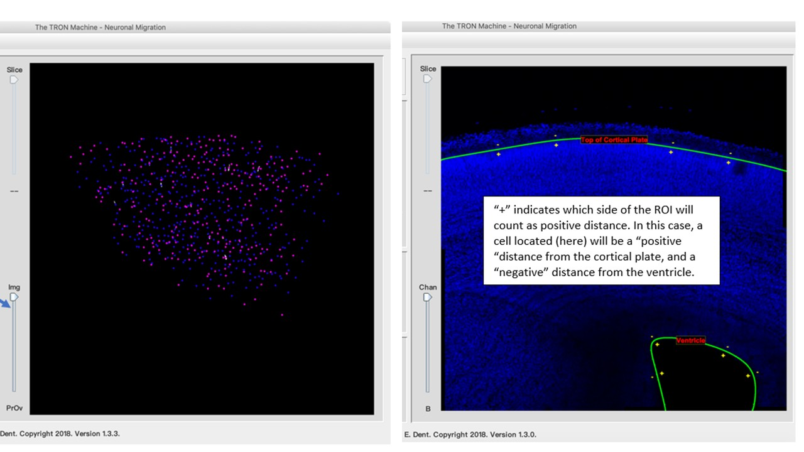
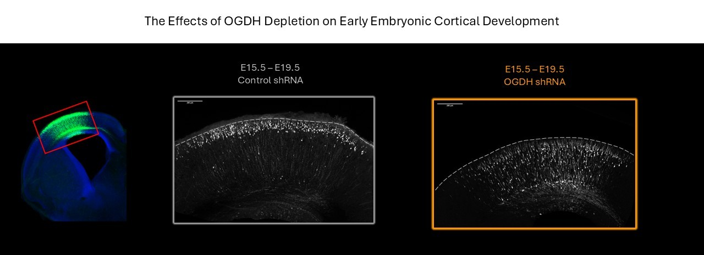

Neuronal Migration Analysis in Developing Mouse Cortex - HOW TO TAME THE CHAOS
Introduction
Our brains are extremely complex, billions of cells form trillions connections.

What distinguishes us from other species is the complexity of the neocortex. That complexity is build by multiple tightly precised stages of development consisting of proliferation and differentiation, migration, synaptogenesis and pruning. These stages are highly energy demanding and require a metabolic transition from glycolisys in stem cells to oxidativephosphorylation (OXPHOS) in neurons.

What are the consequences of cortical development errors? Those errors may result in neurodevelopmental disorders. Pathogenic variants in OGDH, rate limiting components of the tricarboxylic acid (TCA) cycle, have been identified in children with severe neurological impairment. The molecular mechanisms by which these mutations give rise to neurodevelopmental disorders remain poorly understood.One possibility is that alteration in OGDH activity or abundance may impact the metabolic switch from glycolisys to OXPHOS, which can result in the cell struggling to energetically support neurodevelopmental processes like neuronal migration.

We decided to take a closer look at neuronal migration in OGDH deficiency model. We performed In Utero Electroporation surgeries to label newborn neurons destined to become building blocks of cortical layer 2/3 and follow them through development.

Methods
To analyze neuronal migration I used TronMachine, an app developed by Erik Dent’s lab (https://dent.neuro.wisc.edu/tools-2/). The app takes z-stacks of 10x confocal images, recognizes the cell body, allows user to define start and end point of migration which usually is defined by Lining of The Ventricle as start and Top of The Cortical Plate as endpoint.

Here are some representative images I acquired.

Here is the .xlsx file format Tron Machine spit out.
# A tibble: 6 × 8
`Object Num` `X (pixels)` `Y (pixels)` Distance from Lining of Ventricle (mi…¹
<dbl> <dbl> <dbl> <dbl>
1 1 598 12 291.
2 2 998 435 235.
3 3 1003 473 264.
4 4 921 508 313.
5 5 1026 542 317.
6 6 1068 607 367.
# ℹ abbreviated name: ¹`Distance from Lining of Ventricle (microns)`
# ℹ 4 more variables: `Distance from Top of Cortical Plate (microns)` <dbl>,
# `Grayscale Value` <dbl>,
# `%migrated Lining of Ventricle to Top of Cortical Plate` <dbl>, ...8 <dbl>
Should we try to analyze it?
Each image gives a separate .xlsx file, so we have multiple files we need to work with. Lets start with tidying that mess. Here is how the directory looks like:
My file names are not uniform and are very confusing, too long for coding, not easily manageable like this: 10x_1024_1umZ_KC72_M1_3169_section_A_crop ANALYSIS.xlsx
Sometimes there are spaces, sometimes there are underscores between words, that needs to be unified.
# The File Names are not uniform and hard to refer to, lets fix thatlibrary("tidyverse") # Using tidyverse (includes stringr)base_dir <-"C:/Users/ciziok/katcizio.github.io/projects/neuronal_migration_analysis/data/Analysis R3/Tron Intermediate files"# Step 1: Tell R where the files are locatedconditions <-c("control"="CTL", "knockdown"="KD") # Map folder names to condition labelsfor (folder innames(conditions)) { # Loop through each folder name in 'conditions' folder_path <-file.path(base_dir, folder) # Build full path: base_dir + folder name files <-list.files(folder_path, # Find all Excel files in the folderpattern ="\\.xlsx$", full.names =TRUE)for (file in files) { # Process each file one by one old_name <-basename(file) # Get filename without folder path kc <-str_extract(old_name, "KC\\d+") # Extract KC number (e.g., KC72) m <-str_extract(old_name, "M\\d+") # Extract mouse number (e.g., M1) section <-str_extract(old_name, "section_([A-Z])")# Extract section (e.g., section_A) section_letter <-str_replace(section, "section_", "") # Remove 'section_' and keep only letter cond <- conditions[[folder]] # Get condition label (CTL or KD) new_name <-paste0(kc, "_", m, "_", cond, "_", # Build new filename section_letter, ".xlsx") output_folder <-paste0(folder, "_mut") # Destination folder (control_mut, knockdown_mut) new_path <-file.path(base_dir, output_folder, # Full path for renamed file new_name)file.copy(file, new_path) # Copy + rename file into *_mut folder }}list.files(file.path(base_dir, "control")) # Check original folder
Now as we have nice easy file names, lets organize the cells of the files. We need to add a column that will help us distinguish data once me merge those files together. To do so we will read files, extract their names, add new column and name it with the file name we extracted.
# My files are .xlsx so I need to use libraries like library(readxl), library(writexl)library(readxl) # Read Excel fileslibrary(writexl) # Write Excel filesbase_dir <-"C:/Users/ciziok/katcizio.github.io/projects/neuronal_migration_analysis/data/Analysis R3/Tron Intermediate files"# Base directory where folders livefolders <-c("control_mut", "knockdown_mut") # Tells R which folders to look intofor (folder in folders) { # Take each folder name and call it 'folder' folder_path <-file.path(base_dir, folder) # Build full path to folder files <-list.files(folder_path, # Find all .xlsx files in folderpattern ="\\.xlsx$", full.names =TRUE)for (file in files) { # Process each file one by one file_id <- tools::file_path_sans_ext(basename(file))# Extract file name without extension df <-read_excel(file) # Read Excel file df$file_id <- file_id # Add new column with file_idwrite_xlsx(df, file) # Save updated file back to same location }}df <-read_excel("C:/Users/ciziok/katcizio.github.io/projects/neuronal_migration_analysis/data/Analysis R3/Tron Intermediate files/control_mut/KC63_M1_CTL_B.xlsx")head(df)
# A tibble: 6 × 9
`Object Num` `X (pixels)` `Y (pixels)` Distance from Lining of Ventricle (mi…¹
<dbl> <dbl> <dbl> <dbl>
1 1 598 12 291.
2 2 998 435 235.
3 3 1003 473 264.
4 4 921 508 313.
5 5 1026 542 317.
6 6 1068 607 367.
# ℹ abbreviated name: ¹`Distance from Lining of Ventricle (microns)`
# ℹ 5 more variables: `Distance from Top of Cortical Plate (microns)` <dbl>,
# `Grayscale Value` <dbl>,
# `%migrated Lining of Ventricle to Top of Cortical Plate` <dbl>,
# prc_dist_V_CP <dbl>, file_id <chr>
Apparently one of the column in each of the excel files did not have a name, so R gave it made up name …8. Lets fix that.
library(readxl) library(writexl) base_dir <-"C:/Users/ciziok/katcizio.github.io/projects/neuronal_migration_analysis/data/Analysis R3/Tron Intermediate files"# Base directory where folders livefolders <-c("control_mut", "knockdown_mut") # Folders to processfor (folder in folders) { # Loop through each folder folder_path <-file.path(base_dir, folder) # Build full path to folder files <-list.files(folder_path, # Find all .xlsx filespattern ="\\.xlsx$", full.names =TRUE)for (file in files) { # Process each file df <-read_excel(file) # Read Excel filenames(df)[names(df) =="...8"] <-"prc_dist_V_CP"# Rename column ...8write_xlsx(df, file) # Save updated file back }}df <-read_excel("C:/Users/ciziok/katcizio.github.io/projects/neuronal_migration_analysis/data/Analysis R3/Tron Intermediate files/control_mut/KC63_M1_CTL_B.xlsx")head(df)
# A tibble: 6 × 9
`Object Num` `X (pixels)` `Y (pixels)` Distance from Lining of Ventricle (mi…¹
<dbl> <dbl> <dbl> <dbl>
1 1 598 12 291.
2 2 998 435 235.
3 3 1003 473 264.
4 4 921 508 313.
5 5 1026 542 317.
6 6 1068 607 367.
# ℹ abbreviated name: ¹`Distance from Lining of Ventricle (microns)`
# ℹ 5 more variables: `Distance from Top of Cortical Plate (microns)` <dbl>,
# `Grayscale Value` <dbl>,
# `%migrated Lining of Ventricle to Top of Cortical Plate` <dbl>,
# prc_dist_V_CP <dbl>, file_id <chr>
YAY it worked!
FIANLLY I GET TO COMBINE THE FILES TOGETHER
library(dplyr) # Data manipulation toolsfolders <-c("control_mut", "knockdown_mut") # Folders to processall_data <-list() # Empty list to store all data framesfor (folder in folders) { # First loop starts folder_path <-file.path(base_dir, folder) # Build full path to folder files <-list.files(folder_path, # List all .xlsx filespattern ="\\.xlsx$", full.names =TRUE)for (file in files) { # Second loop starts df <-read_excel(file) # Read Excel file df$condition <- folder # Add condition column (folder name) all_data[[length(all_data) +1]] <- df # Append df to list (each file = one element) }}migration_data <-bind_rows(all_data) # Combine all data frames into one tibblewrite_xlsx(migration_data, "combined_migration_data.xlsx")# Save combined dataset to Excelglimpse(migration_data)
Rows: 10,279
Columns: 11
$ `Object Num` <dbl> 1, 2, 3, 4, 5…
$ `X (pixels)` <dbl> 598, 998, 100…
$ `Y (pixels)` <dbl> 12, 435, 473,…
$ `Distance from Lining of Ventricle (microns)` <dbl> 291.4341, 234…
$ `Distance from Top of Cortical Plate (microns)` <dbl> -556.59611, -…
$ `Grayscale Value` <dbl> 65535, 28931,…
$ `%migrated Lining of Ventricle to Top of Cortical Plate` <dbl> 65.633997, 75…
$ prc_dist_V_CP <dbl> 34.36600, 24.…
$ file_id <chr> "KC63_M1_CTL_…
$ condition <chr> "control_mut"…
$ `Distance from Top of Cortical Plate (microns)` <dbl> NA, NA, NA, N…
Because I fixed the file names now I can use file_id column to pull out the information on the embryo batch, mouse number, condition and section. I can extract all these to separate columns.
migration_data <- migration_data %>%mutate(KC =str_extract(file_id, "KC\\d+"), # Extracts KC number (KC72)mouse =str_extract(file_id, "M\\d+"), # Extracts mouse number (M1)section =str_extract(file_id, "[A-Z]$"), # Extracts last letter (A/B/C)cond =ifelse(str_detect(file_id, "CTL"), # Extracts condition"control", "knockdown") )# Saving to a separate excel, just because I canwrite_xlsx(migration_data, "migration_data_with_metadata.xlsx")glimpse(migration_data)
Rows: 10,279
Columns: 15
$ `Object Num` <dbl> 1, 2, 3, 4, 5…
$ `X (pixels)` <dbl> 598, 998, 100…
$ `Y (pixels)` <dbl> 12, 435, 473,…
$ `Distance from Lining of Ventricle (microns)` <dbl> 291.4341, 234…
$ `Distance from Top of Cortical Plate (microns)` <dbl> -556.59611, -…
$ `Grayscale Value` <dbl> 65535, 28931,…
$ `%migrated Lining of Ventricle to Top of Cortical Plate` <dbl> 65.633997, 75…
$ prc_dist_V_CP <dbl> 34.36600, 24.…
$ file_id <chr> "KC63_M1_CTL_…
$ condition <chr> "control_mut"…
$ `Distance from Top of Cortical Plate (microns)` <dbl> NA, NA, NA, N…
$ KC <chr> "KC63", "KC63…
$ mouse <chr> "M1", "M1", "…
$ section <chr> "B", "B", "B"…
$ cond <chr> "control", "c…
Nice! Now it will be easier to plot by condition, brain or embryo batch.
CAN YOU BELIEVE IT IS ANALYSIS TIME?!
What is the mean distance cells traveled from ventricle to top of the cortical plate by condition?
Knockdown curve is left‑shifted which means fewer cells reach the CP! EXCITING! Lets visualize it better by binning!
library(dplyr)library(ggplot2)migration_data <-read_excel("migration_data_with_metadata.xlsx")migration_binned <- migration_data %>%# I am creating bins# I need to create new column called bin# Then "cut" my variables to converts them into discrete intervals mutate(bin =cut( prc_dist_V_CP,breaks =seq(0, 100, by =20),include.lowest =TRUE, labels =paste0(seq(0, 80, by =20), "-", seq(20, 100, by =20)) # Make sure lowest value from first bin is included )) %>%group_by(cond, bin) %>%# Grouping by condition and binsummarise(n =n()) %>%# Count cells in each binmutate(percent = n /sum(n) *100) # Converting counts to percentagesggplot(migration_binned, aes(x = bin, y = percent, fill = cond)) +# Plotting the binned datageom_col(position ="dodge") +# Dodge - bars are placed side by sidelabs(title ="Migration Binning (20% Intervals)",x ="Migration Bin (Percent V → CP)",y ="Percent of Cells" ) +theme_cowplot() +theme(axis.text.x =element_text(angle =0, vjust =0.2, hjust =0.2), # keep horizontalaxis.ticks.length =unit(2, "pt") )
This is definitely not normal distribution! Lets try some stats.
wilcox.test(prc_dist_V_CP ~ cond, data = migration_data)
Wilcoxon rank sum test with continuity correction
data: prc_dist_V_CP by cond
W = 17198985, p-value < 2.2e-16
alternative hypothesis: true location shift is not equal to 0
Seems like knockdown significantly reduces migration! Lets dig deeper! Does embryo batch accounts for any differences?
mouse_medians <- migration_data %>%# Compute medians per mouse per conditiongroup_by(KC, mouse, cond) %>%# Group by KC batch (embryo batch), mouse and condition summarise( # Calculate median migration distancemedian_prc =median(prc_dist_V_CP, na.rm =TRUE),n_cells =sum(!is.na(prc_dist_V_CP)), # Count how manay cells were measured for that mouse.groups ="drop"# Drop grouping so table is clear)mouse_medians
library(lme4) # mixed-effect modeling packagelibrary(lmerTest) # p-valuesmodel_med <-lmer( median_prc ~ cond + (1| KC) + (1| mouse), # is there natural difference between embryo batches or micedata = mouse_medians # - Fixed effects: the estimated effect of knockdown and its p-value.# - Random effects: how much KC and mouse contribute to variability.# - Residuals: leftover variation not explained by the model.) summary(model_med)
Linear mixed model fit by REML. t-tests use Satterthwaite's method [
lmerModLmerTest]
Formula: median_prc ~ cond + (1 | KC) + (1 | mouse)
Data: mouse_medians
REML criterion at convergence: 34.8
Scaled residuals:
Min 1Q Median 3Q Max
-0.9638 -0.3881 -0.2480 0.3595 1.2470
Random effects:
Groups Name Variance Std.Dev.
KC (Intercept) 0.000 0.000
mouse (Intercept) 9.460 3.076
Residual 7.142 2.672
Number of obs: 8, groups: KC, 4; mouse, 4
Fixed effects:
Estimate Std. Error df t value Pr(>|t|)
(Intercept) 83.225 1.966 3.661 42.342 4.63e-06 ***
condknockdown -9.510 2.097 3.804 -4.536 0.0118 *
---
Signif. codes: 0 '***' 0.001 '**' 0.01 '*' 0.05 '.' 0.1 ' ' 1
Correlation of Fixed Effects:
(Intr)
condknckdwn -0.309
optimizer (nloptwrap) convergence code: 0 (OK)
boundary (singular) fit: see help('isSingular')
The analysis tells us is that:
Intercept = 83.2 This is the estimated median migration percentage for control mice, after accounting for KC and mouse variability.
condknockdown = –9.51 This is the key effect.Knockdown mice have a median migration distance ~9.5 percentage points lower than control mice.
p = 0.0118 This indicates the knockdown effect is statistically significant, even after accounting for KC batch differences and mouse‑to‑mouse variability.
KC variance = 0 This means KC batch does not contribute measurable variability in median migration.
mouse variance = 9.46 (SD ≈ 3.08) It means different mice have different baseline migration medians.
Residual variance = 7.14 (SD ≈ 2.67) This is the remaining variability not explained by condition or random effects.
Key Findings
Migration distributions are strongly right‑skewed, with control neurons clustering near the cortical plate and knockdown neurons showing a broader, left‑shifted pattern.
Normality tests and visualizations confirm non‑normal distributions, making non‑parametric and mixed‑effects approaches necessary.
Wilcoxon rank‑sum testing shows a highly significant shift between conditions (p < 2.2 × 10⁻¹⁶), indicating that knockdown neurons occupy systematically lower migration positions.
Per‑mouse median migration values reveal consistent biological replicates, with knockdown mice showing reduced migration compared to controls.
Mixed‑effects modeling confirms a robust knockdown effect, estimating a ~9.5 percentage‑point decrease in median migration distance (p = 0.012) after accounting for mouse‑to‑mouse variability and KC batch.
KC batch contributes no detectable variance, indicating stable experimental conditions across batches.